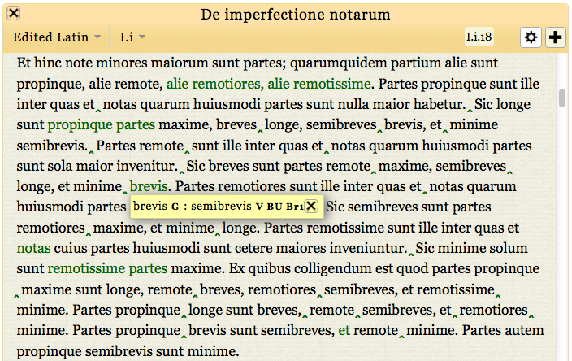

  <div class="content">
  	<div class="contentbox">
      <div class="explanation navigation">
          <div class="explanation-row">
            <div class="cell"></div>
            <div class="cell"><a href="../#">Up (website guide)</a></div>
            <div class="cell"></div>
          </div>
        <div class="explanation-row">
          <div class="cell"><a href="2.html">Back (variant pop-ups)</a></div>
          <div class="cell"></div>
          <div class="cell"><a href="4.html">Next (musical variants)</a></div>
        </div>
      </div>
      <h3>The edition pages: viewing variants III</h3>
      <p>The variant information box that appears when the mouse moves
      over green text disappears as soon as the pointer moves away. To
      keep the information on screen, click on the green text. This
      keeps the boxes visible until they are explicitly closed, and
      allows you to move them around and view several at once. Holding
        down the <i>alt</i> key whilst clicking to close a box will close all
      open boxes.</p>
      <div class="helpshot h716">
        
      </div>
    <!--end .contentbox -->
  	</div>
    <!-- end .content -->
   </div>